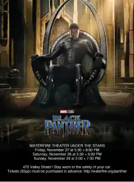

<!DOCTYPE html>
<html lang="en"x-data="{menuIsOpen: false}" :class="{noscroll:menuIsOpen}"></html>
<head>
    <meta charset="UTF-8">
    <meta http-equiv="X-UA-Compatible" content="IE=edge">
    <meta name="viewport" content="width=device-width, initial-scale=1.0">
    <link rel="stylesheet" href="../src/css/style.css">
    <link rel="alternate" hreflang="fr" href="http://architect.claudesamba.fr
    " />
<link rel="alternate" hreflang="es" href="http://architect.claudesamba.fr
" />
<link rel="alternate" hreflang="de" href="http://architect.claudesamba.fr
" />
    <script defer src="https://unpkg.com/alpinejs"></script>
    
    
    <title>Réalisateur</title>
   
    <link rel="icon" href="../public/icones/logo.svg" />
</head>

<body>
    <header class="header">
       
        <div class="header__logo-lang">
        <a href="../fr/index.html" onclick="document.cookie = 
        `nf_lang=en; path=/ ; SameSite=Strict`
        ">
          
        </a>
        </div>
        <div class="header__logo">
             <a class="header__link-logo" href="/en/index.html">KULTURE</a>
        </div>


        <button  class="header__menubtn menubtn" aria-controls="mainNav" @click="menuIsOpen = !menuIsOpen" :class="menuIsOpen &&'menubtn--open'" >
            <span class="menubtn__bar"></span>
        </button>

          <nav  id="mainNav" class="header__menu menu"  x-show="menuIsOpen" x-transition.duration.800ms >
             
                <a  class="page-title" href="../en/index.html">
                    KULTURE
                </a>
            

            <ul class="menu__list">

                <li class="menu__item">
                    <a  class="menu__link "href="movie.html">
                        Black Panther
                    </a>
                </li>


                <li class= "menu__item">
            <a class="menu__link "href="director.html">
                Ryan Coogler
            </a>
        </li>


        <li class= "menu__item">
            <a class="menu__link "href="music.html">
              Lift Me Up 
                 
            </a>
        </li>


        <li class= "menu__item">
            <a class="menu__link " href="book.html">
        A nation under our feet 
        </a>
    </li>


        <li class= "menu__item">
            <a class="menu__link " href="formulaire.html">
            Contact
        </a>
    </li>

      
    </header>


    <main>
    <h1 class="titre_article">
        Ryan Coogler - The Maestro Behind the Phenomenon "Black Panther"
      </h1>
<p class="date_publication"> By Claude MALANDA 
    </p> 
    
    <p class="date_publication"> Published on 24/10/2024, updated today at 9:45 AM
    </p>
   
    <div class="chapo">
    <p><p> Ryan Coogler is the creative force behind the phenomenal success of the film Black Panther. American director, producer, and screenwriter Ryan Coogler was born in Oakland on May 23, 1986.</p>
    </div>
    
    

    <p>After his remarkable debut with Fruitvale Station in 2013, a film based on real events that captivated the audience, he continued with Creed in 2015, a revitalization of the Rocky saga. His early successes laid the foundation for his career. However, it was in 2018 with the film Black Panther that his career truly stepped into the spotlight, bringing an African superhero into the Marvel universe.</p>

 <div class="section_clair">
    <div class="image-container">
 
    </div>
    <p> The tragic death of actor Chadwick Boseman, the main character of Black Panther, was a tough blow. Coogler revealed that he had considered leaving the film industry after Boseman's death. In an interview with the American site EW.Com, he explained: "I found myself at a point where I said I'm going to leave this profession. I can't imagine doing another film, let alone a new Black Panther because it hurt too much."</p>

    <p> Ryan Coogler is a creative genius; his work is exceptional. He has solidified his position as a director and brought a breath of fresh air to Hollywood.</p>

    <p> To learn more about this talented director, please read: Ryan Coogler</p>

</div>
 
<h2>Filmography</h2>

<div class="gallery">
    <div class="gallery-item">
        
        <p class="image-title">Creed III</p>
    </div>

    <div class="gallery-item">
        
        <p class="image-title">Creed I </p>
    </div>

    <div class="gallery-item">
        
        <p class="image-title">Creed II </p>
    </div>

    <div class="gallery-item">
        
        <p class="image-title">Judas and the Black Messiah </p>
    </div>

    
    <div class="gallery-item">
        
        <p class="image-title">Black Panther </p>
    </div>

    <div class="gallery-item">
        
        <p class="image-title">Black Panther: Wakanda Forever </p>
    </div>
</div>


</main>
<footer class="footer">

    <div class="menu--separation">
      <span class="menu__barresep"></span>
  </div>

    <div class="footer-colum">
        

        <div class="menu__container">
            <p class="footer__texte">Claude MALANDA</p>
            <a class="footer__mail" href="mailto:claude.malamda_samba@edu.univ-fcomte.fr">claude.malamda_samba@edu.univ-fcomte.fr</a>

            <div class="reseau">
                <a href="#">
                    
                </a>
                <a href="#">
                    
                </a>
                <a href="#">
                    
                </a>
            </div>
        </div>
   

    
        <div class="footer_p">

          
            <p><a class="footer__lien-title" href="../en/about.html">About</a>
            </p>
            
           <p><a class="footer__lien-title"  href="../en/about.html">Glossary</a></li>
           </p> 
            <p><a class="footer__lien-title"   href="../en/other.html">Other projects</a>
           </p>

        
           
        </div>
</div>
        <p class="footer__p">
          Project carried out as part of an educational exercise at the
            <a class="footer__link" href="http://mmimontbeliard.com/contact">
              Montbéliard MMI department
            </a>
        </p>
    
</footer>
</body>
</html>